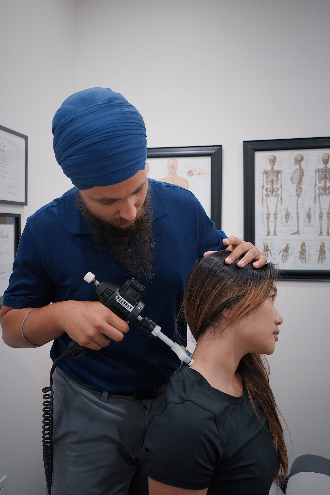

Family chiropractic care
Family chiropractic care.
Smiley Family Chiropractic
Indianapolis, Indiana
Smiley Family Chiropractic is a chiropractic clinic in Indianapolis, Indiana, offering family chiropractic care from a husband-and-wife team, described on its own site as trusted in the community for 15-plus years.
Family chiropractic care.
Care from a husband-and-wife team.
Trusted in the community for 15-plus years, per the clinic's own description.
Call to ask about appointments. No online booking was verified; the clinic's own site has an appointment-request tab only.

All photos on this page are stock photos, not photos of this business.